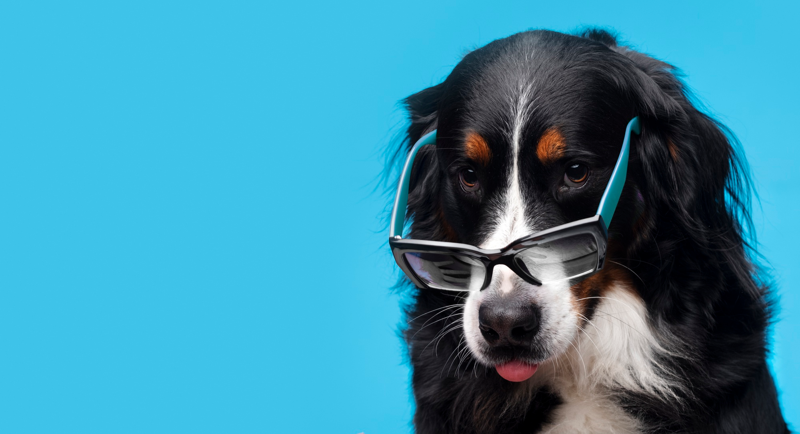

#}
{# #}
#}
{# #}
'سگها'
سلامت سگها
چگونه با یک سگ بیمار رفتار می کنید؟
سگ های بیمار نیاز به خواب و استراحت زیادی دارند. مکانی آرام و راحت برای استراحت سگ خود فراهم کنید که مزاحمتی نداشته باشد، از جمله سایر حیوانات خانگی یا کودکان خردسال که ممکن است آزاردهنده باشند. ممکن است بخواهید سگ بیمار خود را در یک اتاق خصوصی یا فضای جداگانه ای از خانه نگه دارید تا مطمئن شوید که آنها تنها می مانند.
سگ ها چقدر عمر می کنند؟
میانگین طول عمر سگ ها بین 10 تا 13 سال است، اگرچه بین نژادها و اندازه ها ، تنوع وجود دارد.
سگ ها چقدر می خوابند؟
سگهای بالغ: به نظر میرسد که بیشتر سگهای بالغ روزانه بین ۸ تا ۱۳.۵ ساعت خواب نیاز دارند که میانگین آن کمتر از ۱۱ ساعت است.
چه غذایی به سگ بیمار بدهیم؟
مرغ و برنج مواد اولیه بسیاری از غذاهای سگ هستند و این غذاهای ملایم به خوبی روی معده ناراحت سگ ها می نشینند. مرغ خرد شده برای معده ناراحت خیلی خوش هضم است و به عنوان یک انگیزه بزرگ برای غذا خوردن برای سگ هایی با کاهش اشتها عمل می کند.كدو حلوايي.آب قلم، آبگوشت استخوان و غذای خشک توله هم از موارد خوب برای سگهای بیمار میباشد .

Meet podcaters

Taylor

Modeling
Fashion

William
Creative
Design

Chan
Education